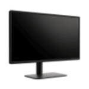
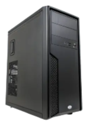
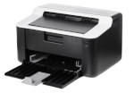
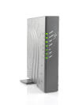
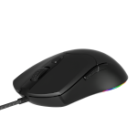
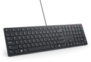

Clique sobre as áreas destacadas em vermelho


Um monitor é um periférico de saída que exibe as informações visuais geradas por um computador, como textos, imagens e vídeos. Ele funciona como a principal tela de interface gráfica, permitindo que o usuário veja e interaja com os programas do sistema

É a caixa de metal ou plástico que guarda e protege as peças de dentro do computador. Ele segura itens como a placa-mãe, a fonte de energia, o disco de armazenamento e a placa de vídeo. O gabinete também ajuda a manter as peças frias com ventoinhas.
Os alto-falantes são usados para executar arquivos de áudio. Podem vir embutidos na unidade de sistema ou serem conectados com cabos. São eles que permitem ouvir música e efeitos de som no computador.

Uma impressora é um aparelho eletrônico que transforma arquivos e imagens digitais em cópias físicas no papel ou em outros materiais. Ela recebe os dados de um computador, celular ou da internet e usa tinta, toner ou calor para registrar o conteúdo.

Um modem é um aparelho que conecta sua casa ou empresa à internet. O nome vem de modulador e demodulador. Ele converte o sinal que vem da operadora (por cabo, fibra ou telefone) em dados que o computador entende, e faz o inverso ao enviar informações.

O mouse é um periférico de entrada usado em computadores para controlar o movimento do cursor (a seta) na tela. Ao movê-lo sobre uma mesa e apertar seus botões, você pode selecionar itens, abrir programas e navegar por páginas de forma rápida e fácil.

O teclado é um periférico de entrada usado para digitar textos, números, símbolos e enviar comandos para o sistema. Inspirado nas antigas máquinas de escrever, ele transforma o toque físico das teclas em sinais elétricos que o computador lê e executa na tela.